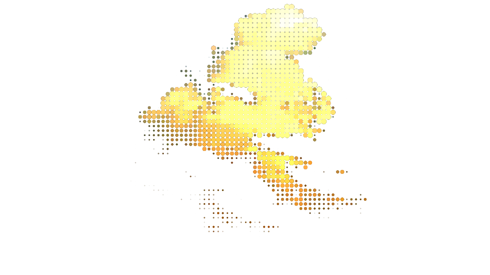

Open up a chat window in ImageJ and tell the AI what you need in plain English. It can be literally anything.
It writes a script you can run from the chat window. It evaluates on the currently open image. Results are returned to ImageJ. The AI will fix it if it doesn't.
Save the pipeline as menu item. Run it on a batch of images. Iterate on it later. Stop thinking.

Turn "give me the fluorescent intensity of every cell in the image" into a working plugin in 10 seconds.
Bridge ImageJ macros with Python. Use CellPose, scikit-image, or your own models directly from the builder.
Run your pipeline across entire folders. Process hundreds of images with consistent parameters and automatic export.
Drop it onto the Fiji window. It installs itself automatically.
Relaunch and find the plugin under Pipelines → New
Build with your own model or use our cloud if you don't want to think about that. The charge helps support our API costs and supports new features and future development.
Configure your AI and build for free. Bring your own key or use 25 starter credits.
Support our development and gives you access to our AI cloud backend. No API key needed.
Real pipelines from the IJPB community. Click any card to see the conversation.
"Count DAPI-stained nuclei, separate touching cells, and export count and mean area per image."
"Use CellPose to segment HeLa cells in phase contrast and output individual cell mask TIFFs."
"Measure Pearson and Manders coefficients between GFP and RFP channels across 48 images."
"Count mRNA FISH spots per nucleus, normalize to nuclear area, and export a tidy CSV."
"Rolling-ball background subtraction + mean intensity per channel per ROI across 200 images."
"Detect and track mitochondrial fission events in a 100-frame time-lapse using TrackMate."
